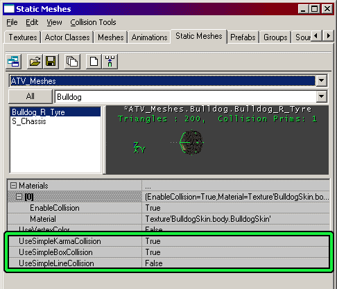

UDN
Search public documentation:
StaticMeshCollisionReferenceJP
English Translation
中国翻译
한국어
Interested in the Unreal Engine?
Visit the Unreal Technology site.
Looking for jobs and company info?
Check out the Epic games site.
Questions about support via UDN?
Contact the UDN Staff
中国翻译
한국어
Interested in the Unreal Engine?
Visit the Unreal Technology site.
Looking for jobs and company info?
Check out the Epic games site.
Questions about support via UDN?
Contact the UDN Staff
StaticMesh 衝突リファレンス
ドキュメントの概要： 本書ではStaticMesh 衝突を検討します。 ドキュメントの変更ログ： 2003 年 10 月 28 日に 2226 をベースとしたビルドのために、Chris Linder (Main.DemiurgeStudios) により作成。関連文書
衝突テュートリアル、KarmaReference （Karma リファレンス）、StaticMesh のチュートリアル、アクタ変数はじめに
衝突は、Unreal Engine において大変取り扱いにくいものです。衝突は、多くの複雑さや微妙な差異を伴うものであり、既に存在する長い文書を対象とします。本書では、物理 を PHYS_None または「ムーバーのチュートリアル」にセットした StaticMesh に主として焦点を当てるために、衝突の有効範囲を狭くしてあります。「StaticMesh」という表現によって、DrawType を DT_StaticMesh にセットしたあらゆるオブジェクトを意味します。これには、StaticMesh で描くアクタ ブラウザのアクタに加えて、右クリックして [Add Static Mesh: '....'] を選択してワールドに配置する StaticMesh も含まれます。StaticMesh の物理もまた重要です。というのは、StaticMesh は、ある場所に位置して他のものによりバンプされるときか、または Movers であるときに最も良く衝突するからです。移動する（しかし、Movers ではない）StaticMesh もまた衝突し、本書は、このような場合にも役に立つことがあります。詳細については、移動する StaticMeshセクションを参照してください。 上記の狭い有効範囲内でさえ、多くの複雑さが伴います。本書では、StaticMesh が所定の設定でどのように衝突するか、およびどのような StaticMesh が衝突するかについての全体的なリファレンスを提供しようとしています。まず第一に重要なことは、衝突には、セットすべき非常にたくさんの衝突変数があり、それらがすべて相互に関係していることを認識することです。何かを衝突させるためにチェックすべきシングル フィールドというものはありません。他のチェックの前に衝突のためのいくつかのチェックが発生し、その結果優先権を持ちます。特定の衝突チェックの優先権がある故に、本書では、StaticMesh の衝突についてガイドするためにステップバイステップのプロセスで構成されています。いずれのステップでも、オブジェクトを衝突しないようにすることができます。オブジェクトが衝突することを確実にするためには、その他のステップをすべて続行して行う必要があります。ステップ 1 ：アクタ衝突プロパティ
アクタ衝突プロパティ（プロパティの「衝突」カテゴリー）を衝突しないようにセットした場合、StaticMesh 衝突（StaticMesh ブラウザのプロパティ）を変更しても衝突は起こりません。アクタ衝突プロパティは、アクタが衝突しようとする必要があるかどうかを示し、StaticMesh 衝突プロパティが、アクタが衝突する必要があるかどうか、およびどのように衝突するかを示します。 例えば、メッシュに KActor をブロックさせたいのに、bBlockKarma を FALSE にセットしている場合、衝突は起こりません。bBlockKarma を TRUE にセットにすると（そしてその他のすべての衝突プロパティを StaticMesh のためにデフォルトのままにします）、衝突する可能性があります。UseSimpleKarmaCollision、UseSimpleBoxCollision、および UseSimpleLineCollision を FALSE にセットし、EnableCollision をすべてのマテリアルに対して TRUE にセットすると必ず衝突します。衝突変数
 このセクションでは、StaticMesh のためのアクタ衝突変数について説明します。アクタ衝突変数を取り扱いにくくしているのは、bWorldGeometry が TRUE かまたは FALSE であるかに基づいて、衝突変数が異なる作用をすることにあります。右クリックして [Add Static Mesh: '....'] を選択して、UnrealEd でレベルにStaticMesh を配置する場合、このタイプの StaticMesh は、bWorldGeometry が TRUE になります。DT_StaticMesh の DrawType を持つ他のタイプのアクタは、bWorldGeometry が FALSE になる可能性があります。bWorldGeometry の値は、変更できず、また、UnrealEd で表示することもできません。UnrealScript で表示および変更できるのみです。何かが移動したり変化したりしないワールド ジオメトリである場合、bWorldGeometry が TRUE であることが一般的です。StaticMesh で描かれるアクタが動いたり変化したりする場合、bWorldGeometry は、おそらく FALSE です。
アクタには、UnrealEd で指定された値を上書きするコードで衝突変数を部分的に変更するものがあるので注意する必要があります。これには例えば、Trigger、Teleporters および WarfareStationaryWeapons などの場合があります。
このセクションでは、StaticMesh のためのアクタ衝突変数について説明します。アクタ衝突変数を取り扱いにくくしているのは、bWorldGeometry が TRUE かまたは FALSE であるかに基づいて、衝突変数が異なる作用をすることにあります。右クリックして [Add Static Mesh: '....'] を選択して、UnrealEd でレベルにStaticMesh を配置する場合、このタイプの StaticMesh は、bWorldGeometry が TRUE になります。DT_StaticMesh の DrawType を持つ他のタイプのアクタは、bWorldGeometry が FALSE になる可能性があります。bWorldGeometry の値は、変更できず、また、UnrealEd で表示することもできません。UnrealScript で表示および変更できるのみです。何かが移動したり変化したりしないワールド ジオメトリである場合、bWorldGeometry が TRUE であることが一般的です。StaticMesh で描かれるアクタが動いたり変化したりする場合、bWorldGeometry は、おそらく FALSE です。
アクタには、UnrealEd で指定された値を上書きするコードで衝突変数を部分的に変更するものがあるので注意する必要があります。これには例えば、Trigger、Teleporters および WarfareStationaryWeapons などの場合があります。
「衝突」対「ブロッキング」に関する重要な注意
「衝突」（例えば bCollideActors の場合）とは、エンジンが 2 つのオブジェクトが接しているかどうかを計算する場合です。「ブロッキング」（例えば bBlockKarma の場合）とは、一つのものが別のものを止める場合です。例えば、トリガは衝突しますが、ブロックはしません。このように、エンジンはトリガに接していることを知りますが、それでもトリガを通って歩くことができます。bWorldGeometry TRUE のための変数の説明
以下に、bWorldGeometry を TRUE にセットしたアクタに適用するアクタ衝突変数の説明があります。これは、右クリックして [Add Static Mesh: '....'] を選択したときに生成する、StaticMeshActor クラスの場合です。デフォルトは、StaticMeshActor の衝突変数で提供されます。| 設定 | 説明 | デフォルト |
|---|---|---|
| bCollideActors | これは最も重要な衝突変数です。bCollideActors が FALSE である場合、StaticMesh は何ものとも衝突しません。これは、衝突ハッシュにないからです。bCollideActors が TRUE である場合、StaticMesh は、その他の以下の設定に基づいて衝突またはブロックする可能性があります。 | True |
| bBlockZeroExtentTraces | bBlockZeroExtentTraces によって、このStaticMesh がゼロエクステントのトレースをブロックしようとするかどうかが決まります。例えば、大部分の武器の発射にはゼロエクステントのトレースが使用されます。メッシュが実際にブロックするかどうかは、bUseCylinderCollision が TRUE である場合、シリンダ衝突によって決定され、または FALSE である場合、以下に説明のあるStaticMesh 衝突プロパティによって決定されます。 | True |
| bBlockNonZeroExtentTraces | bBlockNonZeroExtentTraces によって、このStaticMesh が非ゼロエクステントのトレースをブロックしようとするかどうかが決定します。例えば、プレーヤの動作には非ゼロエクステントのトレースが使用されます。メッシュが実際にブロックするかどうかは、bUseCylinderCollision が TRUE である場合、シリンダ衝突によって決定され、または FALSE である場合、以下に説明のあるStaticMesh 衝突プロパティによって決定されます。 | True |
| bBlockKarma | これを TRUE にセットすると、StaticMesh が Karma をブロックしようとします。メッシュが実際にブロックするかどうかは、以下に説明のある StaticMesh 衝突プロパティによって決定されます。注：これは、bUseCylinderCollision によって影響されません。 | True |
| bUseCylinderCollision | これが TRUE である場合、エンジンはシリンダ衝突（CollisionRadius および CollisionHeight によって定義）を Karma 衝突を除くすべての衝突のために使用します。StaticMesh 衝突プロパティの設定は、Karma 衝突を除いて無視されます。 | False |
| bPathColliding | bBlockActors および bCollideActors が TRUE で、bStatic が FALSE である場合、bPathColliding を FALSE にセットすると、パス構築の間にアクタは衝突しません。このことは、AI が、たとえできなくても、アクタを通り抜けて移動できると考えることを意味します。bPathColliding を TRUE にセットすると、AI がアクタを通り抜けて移動することが可能な場合、AI がアクタを通り抜けてパスを発見することは妨げられません。この設定は、AI が通り抜けようとするときに、道から外れて移動するムーバーやアクタにとって役に立ちます。bStatic は、StaticMeshActors に対して TRUE であるので、たいていの場合、bPathColliding は、StaticMesh にとって重要ではありません。 | False |
| bCollideWorld | bWorldGeometry = TRUE StaticMesh の衝突の仕方に影響しません。 | False |
| bBlockActors | bWorldGeometry = TRUE StaticMesh の衝突の仕方に影響しません。 | False |
| bBlockPlayers | bWorldGeometry = TRUE StaticMesh の衝突の仕方に影響しません。 | False |
| bProjTarget | bWorldGeometry = TRUE StaticMesh の衝突の仕方に影響しません。 | False |
bWorldGeometry FALSE のための変数説明
以下に、 bWorldGeometry を FALSE にセットしたアクタに適用される、アクタ衝突変数の追加説明があります。このタイプの StaticMesh は、ものをブロックしないという追加のチャンスを持つことを除いて、上述の StaticMesh と同じように機能します。まず、上記のチャートを使用して、問題の StaticMesh がものをブロックするかどうかを調べます。ブロックしない場合は、設定を変更します。上記の説明にしたがって、StaticMesh がブロックする場合、以下の追加のチェックを適用して、本当にブロックするかどうかを確認できます。| 設定 | 説明 |
|---|---|
| bCollideWorld | これは、 PHYS_None の StaticMesh か、またはムーバーにとって重要ではありません。しかし、StaticMesh が移動している場合、これを TRUE にセットすることになります。 |
| bBlockActors | 他の非プレーヤのアクタをブロックしようとします。機能させるためには、bBlockNonZeroExtentTraces を TRUE にセットする必要があります。メッシュが実際にブロックするかどうかは、bUseCylinderCollision が TRUE の場合、シリンダ衝突によって決定し、bUseCylinderCollision が FALSE である場合、以下に説明のあるStaticMesh 衝突プロパティによって決定します。 |
| bBlockPlayers | 他のプレーヤアクタをブロックします。機能させるためには、bBlockNonZeroExtentTraces を TRUE にセットする必要があります。メッシュが実際にブロックするかどうかは、bUseCylinderCollision が TRUE である場合、シリンダ衝突によって決定し、bUseCylinderCollision が FALSE である場合、以下に説明のあるStaticMesh 衝突プロパティによって決定します。 |
| bProjTarget | ロケットなどの発射物や瞬時攻撃弾でさえブロックします。機能させるためには、bBlockZeroExtentTraces を TRUE にセットする必要があります。メッシュが実際にブロックするかどうかは、bUseCylinderCollision が TRUE である場合、シリンダ衝突によって決定し、bUseCylinderCollision が FALSE である場合、以下に説明のあるStaticMesh 衝突プロパティによって決定します。 |
ステップ 2： StaticMesh 衝突プロパティ
このセクションで取り上げる StaticMesh 衝突プロパティは、ステップ 1で述べられたアクタ衝突プロパティに基づいて、オブジェクトが衝突するようにセットされていない場合、使用されません。 このセクションでは、StaticMesh ブラウザウィンドウにあるプロパティをいくつか取り上げます。以下のイメージで見える、衝突モデルと StaticMesh ブラウザにある UseSimple（単純を使用）プロパティの間にある関係をチャートを使用して図説します。
それぞれの衝突モデル タイプに対して、None、Type 1 および Type 2 の異なるチャートがあります。それぞれのチャートでは、UseSimpleKarmaCollision、UseSimpleBoxCollision および UseSimpleLineCollision のすべての可能な設定が、それぞれ Karma、Box、および Line カラムで表されます。 Karma オブジェクトカラムは、メッシュが Karma オブジェクトをブロックするために使用するものを示します。NonZeroExtentTrace (ポーンの動作など) カラムは、ポーンの動作やシリンダ衝突などによって使用される非ゼロエクステントのトレースをブロックするためにメッシュが使用するものを示します。ZeroExtentTrace (武器の発射など) カラムは、武器の発射などによって使用されるゼロエクステントのトレースをブロックするためにメッシュが使用するものを示します。衝突モデルのない場合
このチャートでは、StaticMesh が衝突モデルを持たない場合の衝突の仕方を検討します。| デフォルト | Karma | Box | Line | Karma オブジェクト | NonZeroExtentTrace (ポーンの動作など) | ZeroExtentTrace (武器の発射など) |
|---|---|---|---|---|---|---|
| False | False | False | マテリアル衝突 | マテリアル衝突 | マテリアル衝突 | |
| False | False | True | マテリアル衝突 | マテリアル衝突 | マテリアル衝突 | |
| False | True | False | マテリアル衝突 | マテリアル衝突 | マテリアル衝突 | |
| False | True | True | マテリアル衝突 | マテリアル衝突 | マテリアル衝突 | |
| True | False | False | 衝突しません | マテリアル衝突 | マテリアル衝突 | |
| True | False | True | 衝突しません | マテリアル衝突 | マテリアル衝突 | |
| * | True | True | False | 衝突しません | マテリアル衝突 | マテリアル衝突 |
| True | True | True | 衝突しません | マテリアル衝突 | マテリアル衝突 |
タイプ 1
このチャートでは、StaticMesh がタイプ 1衝突モデルを持つ場合の衝突の仕方を検討します。タイプ 1衝突モデルは、ブラシを衝突として保存するまたはK-DOPを使用して作成します。このタイプの衝突には、衝突シェイプモデリング プログラムで作成するを MCDCX タグ付きで含みます。| デフォルト | Karma | Box | Line | Karma オブジェクト | NonZeroExtentTrace (ポーンの動作など) | ZeroExtentTrace (武器の発射など) |
|---|---|---|---|---|---|---|
| False | False | False | マテリアル衝突 | マテリアル衝突 | マテリアル衝突 | |
| False | False | True | マテリアル衝突 | マテリアル衝突 | 衝突モデルで衝突 | |
| False | True | False | マテリアル衝突 | 衝突モデルで衝突 | マテリアル衝突 | |
| False | True | True | マテリアル衝突 | 衝突モデルで衝突 | 衝突モデルで衝突 | |
| True | False | False | 衝突モデルで衝突 | マテリアル衝突 | マテリアル衝突 | |
| True | False | True | 衝突モデルで衝突 | マテリアル衝突 | 衝突モデルで衝突 | |
| * | True | True | False | 衝突モデルで衝突 | 衝突モデルで衝突 | マテリアル衝突 |
| True | True | True | 衝突モデルで衝突 | 衝突モデルで衝突 | 衝突モデルで衝突 |
タイプ 2
このチャートでは、StaticMesh がタイプ 2衝突モデルを持つ場合の衝突の仕方を検討します。タイプ 2衝突モデルは、Karma プリミティブにフィットするか、または、衝突シェイプモデリング プログラムで作成を MCDBX、MCDSP、または MCDCY タグ付きで使用して作成します。| デフォルト | Karma | Box | Line | Karma オブジェクト | NonZeroExtentTraces (ポーンの動作など) | ZeroExtentTraces (武器の発射など) |
|---|---|---|---|---|---|---|
| False | False | False | マテリアル衝突 | マテリアル衝突 | マテリアル衝突 | |
| False | False | True | マテリアル衝突 | マテリアル衝突 | マテリアル衝突 | |
| False | True | False | マテリアル衝突 | マテリアル衝突 | マテリアル衝突 | |
| False | True | True | マテリアル衝突 | マテリアル衝突 | マテリアル衝突 | |
| True | False | False | 衝突モデルで衝突 | マテリアル衝突 | マテリアル衝突 | |
| True | False | True | 衝突モデルで衝突 | マテリアル衝突 | マテリアル衝突 | |
| * | True | True | False | 衝突モデルで衝突 | マテリアル衝突 | マテリアル衝突 |
| True | True | True | 衝突モデルで衝突 | マテリアル衝突 | マテリアル衝突 |
ステップ 3：マテリアル衝突
マテリアル衝突は、衝突モデルが使用されていないときにのみ使用します。マテリアル衝突がStaticMesh にとって重要かどうかを判断するには、ステップ 2から上記のチャートを参照してください。 衝突は、StaticMesh ブラウザでマテリアル単位でセットできます。メッシュのマテリアルを部分的に衝突させるだけの方が非常に役立つことが時々あります。マテリアル衝突の設定は、[マテリアル] アレイを展開して、以下のイメージに示されるように各マテリアルに対して EnableCollision （衝突を可能にする） を設定することによって行います。 EnableCollision が、マテリアルに対して True であるとき、そのマテリアルでテクスチャされるメッシュのすべてのトライアングルが、衝突計算のために使用されます。このことは、衝突計算が、見えているトライアングルに正確に基づくものだということを意味します。これは、同じスピードであることもありますが、たいていの場合、衝突を計算するためのトライアングルがより多くなるため、単純化した衝突モデルを使用するよりもスピードが遅くなります。
EnableCollision が、マテリアルに対して True であるとき、そのマテリアルでテクスチャされるメッシュのすべてのトライアングルが、衝突計算のために使用されます。このことは、衝突計算が、見えているトライアングルに正確に基づくものだということを意味します。これは、同じスピードであることもありますが、たいていの場合、衝突を計算するためのトライアングルがより多くなるため、単純化した衝突モデルを使用するよりもスピードが遅くなります。